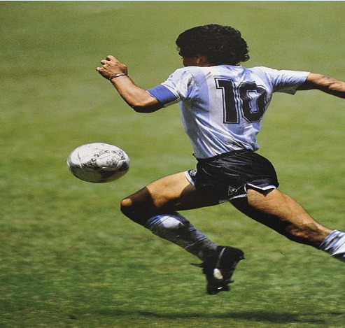

Records:
- Jugador que más veces fue goleador de la Primera División de Argentina: 5 campeonatos. (Récord compartido con Domingo Tarasconi).
- Jugador que más veces consecutivas fue goleador de la Primera División de Argentina: 4 campeonatos. (Récord compartido con Elíseo Brown, Alberto Ohaco y José Sanfilippo).
- Jugador más joven en convertir un gol en la Primera División de Argentina: 16 años y 15 días.
- Jugador más joven en convertir un doblete en la Primera División de Argentina: 16 años y 15 días.
- Jugador más joven en convertir un triplete en la Primera División de Argentina: 17 años, 4 meses y 17 días.
- Jugador más joven en ser goleador de la Primera División de Argentina: 17 años, 11 meses y 29 días.
- Jugador más joven en convertir 100 goles en la Primera División de Argentina: 19 años, 10 meses y 15 días.
- Jugador más joven en debutar en la Selección de Argentina: 16 años y 4 meses.
- Único jugador argentino en ganar la Copa Mundial con las selecciones sub-20 y absoluta.
- Máximo goleador histórico de Argentinos Juniors en Primera División: 116 goles.
- Único jugador de Argentinos Juniors en convertir más de 100 goles en Primera División.
- Jugador del Napoli con más títulos oficiales: 5 títulos. (Récord compartido con Ciro Ferrara, Alessandro Renica y Fernando De Napoli).
- Primer jugador del Napoli en ser Capocannoniere de la Serie A.
- Máximo goleador histórico del Napoli en la Copa Italia: 29 goles.
- Máximo goleador extranjero de la historia de la Copa Italia: 29 goles.